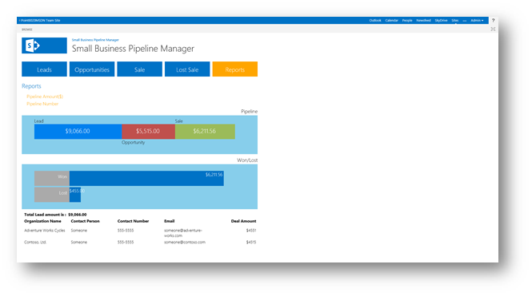

Provided by: Martin Harwar, Point8020.com.
The solution is based on the SharePoint-hosted app template provided by Visual Studio 2012. The solution uses the JavaScript implementation of the client object model to read, create, update, and delete data from lists based on user actions. The list data included in this solution represents sales leads, opportunities, closed sales, and lost sales.
The user interface is implemented with simple HTML elements and cascading style sheet styles (CSS) to present a modern look and feel.
All aspects of the user interface are controlled using JavaScript and JQuery. The solution contains no server-side code.
Prerequisites
This sample requires the following:
-
Visual Studio 2012 (full release version; no beta or release candidates)
-
Office Developer Tools for Visual Studio 2012 (full release version; no beta or release candidates)
-
Either one of the following:
-
Access to an Office 365 Developer Site configured to host apps (recommended)
-
SharePoint Server 2013 (RTM) configured to host apps, and with a Developer Site collection already created
-
Key components
The sample app contains the following:
-
The Default.aspx webpage, which is used to present the data at different stages through a sales pipeline. This webpage also displays graphical reports and charts that let the user see the entire pipeline at a glance.
-
The App.js file in the scripts folder, which is used to retrieve and manage the pipeline data by using the JavaScript (JSOM) implementation of the client object model (CSOM). The App.js file also contains the user interface logic that is implemented in Default.aspx.
-
The App.css file in the contents folder, which contains style definitions used by the elements in Default.aspx.
-
A list definition and instance named Prospects, which is used to store the sales activity in SharePoint.
All other files are automatically provided by the Visual Studio project template for apps for SharePoint, and they have not been modified in the development of this sample app.
Configure the sample
Follow these steps to configure the sample.
-
Open SP_PipelineManager_js.sln using Visual Studio 2012.
-
In the Properties window, add the full URL to your Office 365 Developer Site or SharePoint Server 2013 Developer Site collection to the Site URL property.
-
If prompted, provide credentials.
Build the sample
Press CTRL+SHIFT+B to build the solution.
Run and test the sample
-
Press F5 to run the app.
-
Sign in to your SharePoint Server 2013 or Office 365 Developer Site if you are prompted.
-
When the app opens, the start screen resembles Figure 1. Note that in Figure 1, the user clicked the Leads tile, which shows two leads. The leads data was deployed with the sample solution.
Figure 1. Pipeline manager start page

-
Users click the Leads tab to create new leads or to expose existing leads. When viewing existing leads, as shown in Figure 2, you can edit information for the lead.
Figure 2. Edit leads page

-
Opportunities are the next stage and represent sales leads that develop into sales opportunities. Clicking the Opportunities tab opens the Opportunities page, where you can see sales leads that have been converted to opportunities. Clicking a specific opportunity opens the Edit Opportunity page (shown in Figure 3), where you can do several things. You can edit details of the opportunity, you can optionally upload a supporting document, or you can close the opportunity, either as a sale or as a lost sale.
Figure 3. Sales opportunity page

-
When you convert a sales opportunity into a sale (or when you click the Sale tile), you are shown a list of sales. Click one of the listed sales to see the sale details, as shown in Figure 4. Similarly, you can click the Lost Sale tile to show a list of lost sales, and to have access to details of the lost sales.
Figure 4. Sales details page

-
Click the Reports tile to select from two report types: the Pipeline Amount($) report or the Pipeline Number report.
Clicking the Pipeline Amount($) report shows the entire sales pipeline, overlaid with monetary values for each stage. Amounts for both sales and lost sales are also displayed (see Figure 5).
Note that the reports are interactive and clickable, so when you click a given stage in the pipeline, details for that stage are displayed below the chart. For example, if you click the Lead stage, details for sales prospects currently in that stage are displayed.
Figure 5. Pipeline Amount($) report
 -
When you click the Pipeline Number report, the entire sales pipeline is again displayed, but this time it is overlaid with the number of prospects in each stage. The chart shows the numbers of sales won and lost, as shown in Figure 6.
Figure 6. Pipeline Number report

Troubleshooting
Make sure that you have a properly configured SharePoint Server 2013 installation that has a Developer Site collection already created; or, that you have signed up for an Office 365 Developer Site configured to host apps. Also, make sure that you are using the released versions of Visual Studio 2012 and Office Developer Tools for Visual Studio 2012.
Change log
|
Version |
Date |
|---|---|
|
First version |
April 2013 |